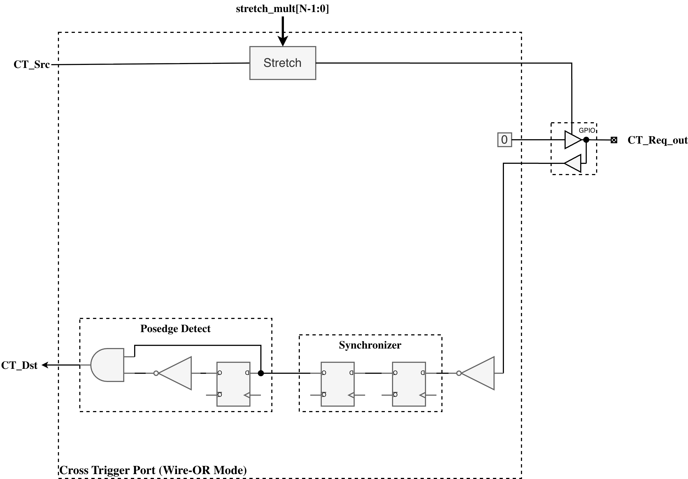

Cross-Trigger Port
The Cross Trigger Port (CTP) is the pad-facing signalling module for cross-trigger communication per the Open Chiplet Cross Triggering (OCCT) specification. Each CTP connects the chiplet core logic to four I/O pads and handles the timing and handshaking required for both wire-OR and point-to-point signalling schemes.
1. Overview
Each CTP connects to four I/O pads:
-
CT_Req_out — cross-trigger request output.
-
CT_Ack_in — acknowledge input (point-to-point only).
-
CT_Req_in — cross-trigger request input (point-to-point only).
-
CT_Ack_out — acknowledge output (point-to-point only).
Two inter-chiplet signalling schemes are supported:
-
Wire-OR — supports a wide range of existing chiplet implementations and is resource efficient. Uses pulse stretching to ensure reliable detection across chiplet boundary delays.
-
Point-to-point — faster, more reliable, and simpler to configure. Uses four-phase handshaking with CDC synchronisers at the die boundary.
2. Configuration
The CTP has no build-time parameters. All operational settings are programmed at runtime through the AXI-Lite CSR interface:
CTP configuration registers summarises the runtime controls exposed through the CTP CSR interface.
| Register | Description |
|---|---|
|
Select wire-OR (0) or point-to-point (1) signalling. |
|
16-bit pulse stretch multiplier for wire-OR mode. |
|
Signal polarity inversion for GPIO adaptation. |
|
Handshake state machine reset. |
See the CTN Memory Map for the full CTP register layout and field descriptions. The CTN decodes the AXI-Lite CSR window and presents each CTP’s registers at a 16-byte stride starting at offset 0x0200.
3. Architecture
The Cross Trigger Port architecture separates the register interface from core
logic to enable reuse. The full cross_trigger_port module includes CSRs for
runtime configuration, while the cross_trigger_port_core module provides the
core functionality without registers, allowing instantiation for internal
cross-trigger connections without AXI-Lite overhead.
CTP module structure shows the Cross Trigger Port logic and its pad interfaces.

3.1. Submodule Hierarchy
The CTP core instantiates four specialized submodules for different aspects of cross-trigger operation:
CTP submodules identifies the submodules that implement synchronization and cross-trigger operation.
| Module | Purpose |
|---|---|
|
Implements 2-FF synchronizers for asynchronous GPIO inputs (ct_req_out_din, ct_req_in_din, ct_ack_in_din) from remote chiplets |
|
Extends source pulse duration for Wire-OR mode transmission, with configurable stretch multiplier (0-65535 cycles) |
|
Detects positive edges on synchronized ct_req_in signal for Point-to-Point mode receiver operation |
|
Implements sender and receiver state machines for Point-to-Point mode four-phase handshaking protocol |
3.2. Wire-OR Mode
Wire-OR mode is a 1-wire cross trigger signaling scheme compatible with many existing cross triggering implementations. This scheme is very resource efficient, as it only requires a single pin per chiplet connected to the network. However, the performance of the network decreases as the number of connected chiplets increase. Also, the duration of the cross trigger pulse must be pre-arranged across all connected chiplets.
3.2.1. Pulse Stretcher Operation
The pulse stretcher extends single-cycle core-side pulses to multi-cycle GPIO
assertions lasting stretch_mult + 1 clock cycles. The module implements a
16-bit countdown counter that loads the stretch multiplier value when a new
pulse arrives and decrements to zero. If a new pulse arrives before the counter
reaches zero, the counter restarts from the stretch multiplier value, ensuring
that rapid successive pulses merge into an extended assertion.
The output stretched_pulse remains asserted as long as the counter is
non-zero. This stretched pulse drives the output enable control for the
open-drain CT_Req_out GPIO pad, effectively pulling the shared wire low for the
configured duration.
Each chiplet has an open-drain I/O connected to a single shared wire. Any connected chiplet may pull this signal low to assert a cross trigger. Depending on the electrical requirements, one or more internal pad pull-ups or external keepers ensure the cross trigger request signal remains high when no cross trigger is asserted. To ensure no connected chiplet misses a cross trigger pulse, all chiplets transmitting a trigger pulse must stretch the pulse a mutually agreed upon length of time.
Note that in wire-OR mode the CT_Req_out signal is connected to an open-drain configured I/O pad. For I/O pads that do have explicit open-drain control, the request data signal should connect to the output-enable control pin of the I/O pad, and the output data signal of the I/O pin should be driven statically low.
CTP wire-OR behavior shows the open-drain request path and pulse-stretching logic used in wire-OR mode.

Any number of chiplets may have their CT_Req_out pads interconnected as shown in CTP wire-OR chiplet connections:

3.3. Point-to-Point Mode
Point-to-point mode utilizes a four-phase handshaking scheme to synchronize a cross trigger quickly and reliably between two chiplets without pulse stretching. While this scheme is simple and fast, it requires a dedicated CTP for each chiplet-to-chiplet interconnection, and each CTP requires four I/O pads for bi-directional communication, or two pads for unidirectional communication. All output pads are configured for push-pull operation.
CTP point-to-point behavior shows the request and acknowledge paths used for point-to-point handshaking.

Any two chiplets may have their four cross trigger pads cross-coupled as shown in CTP point-to-point chiplet connections:

On the sender side, the receiver’s CT_Ack_out is connected to the sender’s CT_Ack_in pad. CT_Req_out asserts whenever CT_Src asserts. CT_Req_out will then remain asserted until CT_Ack_in asserts.
On the receiver side, the sender’s CT_Req_out is connected to the receiver’s CT_Req_in pad. On any positive edge of CT_Req_in, the receiver generates a pulse on CT_Dst and asserts CT_Ack_out. Deassertion proceeds in exactly the same sequence.
The timing of the request/acknowledge handshake is shown in CTP request-acknowledge timing:

3.3.1. Synchronization and CDC Handling
All GPIO input signals are asynchronous with respect to the CTP system clock and
require synchronization to prevent metastability. The ctp_synchronizer module
implements three independent 2-FF synchronizer chains using the
prim_flop_2sync primitive:
CTP signal synchronization identifies the incoming signals synchronized in each operating mode.
| Signal | Used In Mode | Synchronization Purpose |
|---|---|---|
|
Wire-OR |
Synchronizes open-drain wire state from remote chiplets before edge detection |
|
Point-to-Point |
Synchronizes request signal from remote sender before receiver FSM |
|
Point-to-Point |
Synchronizes acknowledge signal from remote receiver before sender FSM |
After synchronization, an optional inversion is applied if the INVERT
configuration bit is set. This allows adaptation to GPIO pads with different
polarity requirements. Edge detection and state machine processing occur only on
synchronized (and optionally inverted) signals, ensuring all CTP core logic
operates on glitch-free inputs.
3.3.2. Handshake State Machines
Point-to-point mode implements two independent state machines within the
ctp_handshake_ctrl module, enabling full-duplex cross-triggering. The sender
state machine controls outgoing cross-trigger requests, while the receiver state
machine handles incoming requests. Both state machines operate synchronously in
the system clock domain on synchronized GPIO inputs.
Sender State Machine:
CTP sender state transitions lists the sender handshake states, transition conditions, and output actions.
| Current State | Condition | Next State | Output Actions |
|---|---|---|---|
SENDER_IDLE |
|
SENDER_REQ_ASSERTED |
Assert |
SENDER_REQ_ASSERTED |
|
SENDER_WAIT_ACK_DEASSERT |
De-assert |
SENDER_WAIT_ACK_DEASSERT |
|
SENDER_IDLE |
None (remain idle) |
Any state |
|
SENDER_IDLE |
Force |
Receiver State Machine:
CTP receiver state transitions lists the receiver handshake states, transition conditions, and output actions.
| Current State | Condition | Next State | Output Actions |
|---|---|---|---|
RECEIVER_IDLE |
|
RECEIVER_ACK_ASSERTED |
Assert |
RECEIVER_ACK_ASSERTED |
|
RECEIVER_WAIT_REQ_DEASSERT |
De-assert |
RECEIVER_WAIT_REQ_DEASSERT |
|
RECEIVER_IDLE |
None |
RECEIVER_WAIT_REQ_DEASSERT |
|
Remain in state |
Continue waiting |
The ct_dst output pulse is generated for a single clock cycle when the
receiver state machine transitions from IDLE to ACK_ASSERTED. The busy signal is
asserted whenever either state machine is not in its IDLE state, indicating an
active cross-trigger transfer.
4. Interface
4.1. Signal Interface
These are the ports of cross_trigger_port. Packed control and bus types remain
bundles at the module boundary; their members are not separate scalar ports.
CTP signal interface lists the CTP ports and their signal types and directions.
| Signal | Direction | Type / dimensions | Description |
|---|---|---|---|
|
Input |
|
System clock for the bus and synchronous logic. |
|
Input |
|
Active-low asynchronous system reset. |
|
Input |
|
AXI-Lite CSR request. |
|
Output |
|
AXI-Lite CSR response. |
|
Input |
|
Synchronous trigger pulse to transmit. |
|
Output |
|
Registered received trigger pulse. |
|
Output |
|
Transfer-in-progress status. |
|
Output |
|
Output enable for CT_Req_out pad. |
|
Output |
|
Input enable for CT_Req_out pad. |
|
Output |
|
Output data for CT_Req_out pad. |
|
Input |
|
Input data from CT_Req_out pad. |
|
Output |
|
Input enable for CT_Req_in pad. |
|
Input |
|
Input data from CT_Req_in pad. |
|
Output |
|
Input enable for CT_Ack_in pad. |
|
Input |
|
Input data from CT_Ack_in pad. |
|
Output |
|
Output enable for CT_Ack_out pad. |
|
Output |
|
Output data for CT_Ack_out pad. |
This table describes cross_trigger_port, including its CSR interface.
The register-free cross_trigger_port_core instead takes mode_wire_or_i,
invert_i, handshake_reset_i, and stretch_mult_i as configuration inputs.
At that core interface, mode_wire_or_i = 1 selects wire-OR and 0 selects
point-to-point; the CSR MODE field is inverted before reaching it.
4.2. Dependencies
The CTP depends on the following components:
-
hw/common/och_prim- Primitive cells (synchronizers, pulse stretcher)